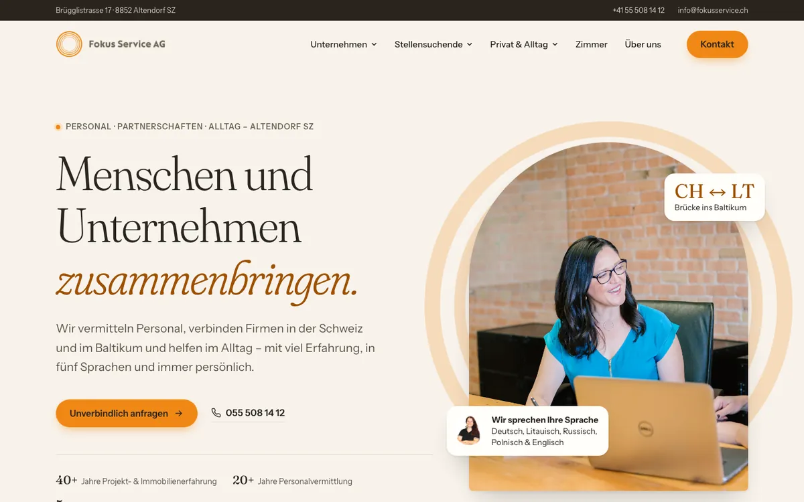

A
Warm & Persönlich
Helles Papierweiss, eine elegante Serifenschrift und die Ringe aus dem Logo als ruhiges Motiv. Wirkt seriös, nahbar und vertrauenswürdig – wie ein persönliches Gespräch.
- Editorial
- Elegant
- Vertrauen
- Ruhig